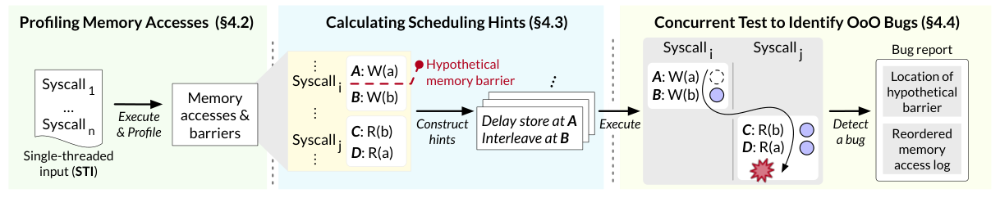
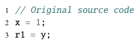
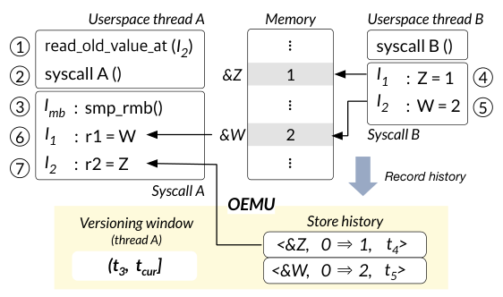
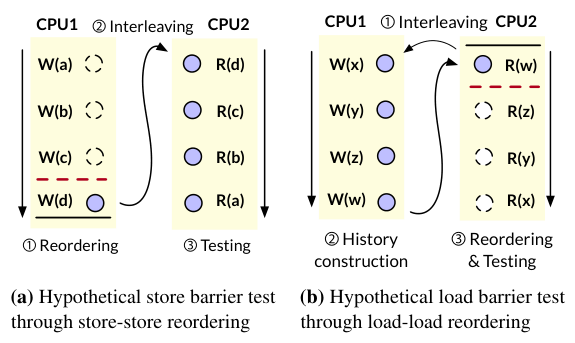
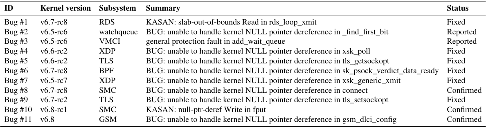
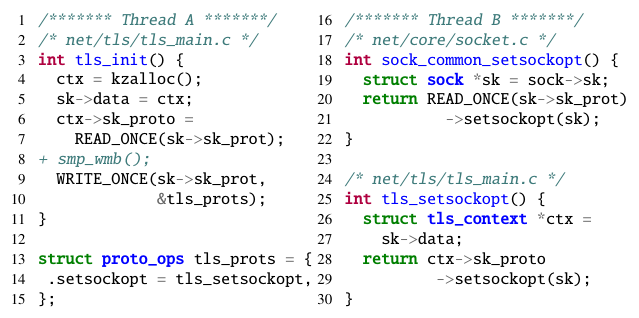
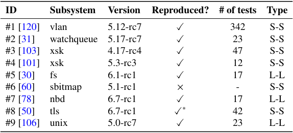

OZZ: Identifying Kernel Out-of-Order Concurrency Bugs with In-Vivo Memory Access Reordering
This page was written by an AI model to give a high-level overview of the paper. Please check the paper for detail: ACM Digital Library.
On a weak memory model architecture such as ARM (including Apple Silicon), the processor is free to execute memory accesses out of the order written in the binary, as long as doing so is invisible to a single thread. Kernel developers must insert explicit memory barriers wherever two concurrent threads rely on seeing stores in a particular order. A missing or wrong barrier produces a concurrency bug that only manifests through a specific, non-intuitive reordering, which the paper calls an out-of-order bug (OOO bug). Reported consequences include denial-of-service, system crashes, data loss, and memory-corruption security bugs. These bugs are largely invisible on x86-64, which preserves most of this ordering in hardware, but become real on ARM.
Finding OOO bugs is hard because they require controlling two independent sources of non-determinism at once: thread interleaving and out-of-order execution. Interleaving is already solvable: concurrency fuzzers pause and resume virtual CPUs or use breakpoints to force a chosen thread schedule. But those same mechanisms impose an in-order execution on the paused thread, hiding the very reordering an OOO bug depends on. The alternative line of work, in-vitro testing, records a memory-access trace after a run and reorders it offline; this discards the kernel's live runtime state (for example, which objects have already been freed), so it cannot drive the bug-detecting oracles (sanitizers, lockdep) that need that state, and it misses bug classes such as double-frees. QEMU's TCG, which Google already uses to run ARM Linux on x86-64 fleets for SYZKALLER, does not reorder memory accesses at all, so it cannot expose OOO bugs either; the realistic alternative is buying large fleets of ARM machines.
The paper's key idea is OEMU, an in-vivo out-of-order execution emulator: instead of reordering instructions (impossible to control safely at runtime) or simulating reordering offline, an LLVM compiler pass replaces every memory-accessing instruction in the kernel with a callback function call at compile time. These callbacks still execute in program order, but they consult OEMU's runtime state to decide what value to actually commit or return, which is enough to emulate store-store, store-load, and load-load reordering while the kernel is actually running, with full access to its live state and sanitizers. OEMU exposes this control to userspace through two system calls: delay_store_at(I), which holds a store's value in a per-thread virtual store buffer instead of writing it to memory, and read_old_value_at(I), which makes a load read a prior value from a store history instead of current memory.
On top of OEMU, the paper builds OZZ, a fuzzer forked from SYZKALLER. OZZ's core move is the hypothetical memory barrier test: for a candidate location, it assumes a memory barrier is missing and uses OEMU plus a hypervisor-level "custom scheduler" (borrowed from prior concurrency fuzzers) to force exactly the reordering that barrier would have prevented, while two concurrently chosen system calls run. If a bug oracle fires, OZZ reports both the bug and the barrier location that would have prevented it. The pipeline runs in three stages: profile memory accesses and barriers from single-threaded fuzzer inputs, compute scheduling hints (where to interleave, what to reorder) for each pair of system calls with a greedy heuristic, and then run the resulting multi-threaded inputs.
Run against Linux 6.5-rc6 through 6.8 over a six-week fuzzing campaign, OZZ triggered 61 unique crash titles, of which 11 are newly discovered OOO bugs, confirmed and patched by kernel developers in subsystems such as TLS, BPF, and the notification mechanism. Separately, OEMU reproduced 8 of 9 previously-reported real-world OOO bugs collected from Linux's git history, usually within tens of test runs. The mechanism is not free: LMBench shows 3.0× to 59.0× per-operation overhead from the instrumentation, and OZZ's overall fuzzing throughput is 7.9× lower than plain SYZKALLER on the same hardware.

Key takeaways
- OOO bugs come from missing or misused memory barriers and mostly manifest on weak-memory architectures (ARM); x86-64 hardware and QEMU's TCG (no reordering) both hide them, which is why Google's x86-64 SYZKALLER fleet cannot find them.
- OEMU makes out-of-order execution a controllable, observable, in-vivo runtime mechanism: an LLVM pass replaces every memory access with a callback, backed by a delayed-store virtual buffer and a versioned-load store history.
- OZZ tests the necessity of a hypothetical memory barrier: it assumes one is missing between two concurrent syscalls and forces precisely the reordering that barrier would prevent, combining OEMU with a hypervisor-level custom scheduler.
- OEMU's reordering rules are designed to comply with the Linux Kernel Memory Model (LKMM), so it never reorders accesses in a way no supported architecture actually would.
- OZZ found 11 new, developer-confirmed OOO bugs in near-mainline Linux (6.5-rc6 to 6.8) and reproduced 8 of 9 previously-fixed OOO bugs, at a measured cost of 3 to 59× per-operation overhead and roughly 7.9× lower fuzzing throughput than SYZKALLER.
From compiled-in reordering to a concurrency fuzzer
Background on memory barriers, why prior testing misses OOO bugs, OEMU's two reordering primitives, and how OZZ drives them to find bugs.
1 · Background: out-of-order execution and memory barriers
Modern processors execute memory accesses out of program order to reduce pipeline stalls and improve cache use. Different architectures reorder differently and by different amounts; ARM-based chips (including Apple Silicon M1/M2) reorder far more aggressively than x86-64. Memory barriers are instructions that force ordering where a program needs it. Linux exposes several, each with different precedent/subsequent semantics:
| Type | API | Precedent accesses | Subsequent accesses |
|---|---|---|---|
| Full | smp_mb() | loads/stores | loads/stores |
| Load | smp_rmb() | loads | loads |
| Store | smp_wmb() | stores | stores |
| Release | smp_store_release(&a, v) | loads/stores | store to &a |
| Acquire | smp_load_acquire(&a) | load from &a | loads/stores |
| Relaxed | READ_ONCE()/WRITE_ONCE() | none | none |
A canonical example from the paper: a pipe ring buffer writer sets buf->ops then increments head, while a reader checks head > tail then dereferences buf->ops. Without a store barrier after the writer's two stores and a load barrier after the reader's check, the two accesses can be reordered so the reader observes an incremented head before the pointer is initialized, dereferencing garbage.
2 · Why existing testing misses OOO bugs
Comprehending an OOO bug requires reasoning about thread interleaving and out-of-order execution together, which manual review of a kernel-sized codebase cannot do reliably. Automated concurrency fuzzers control interleaving with breakpoints or by pausing virtual CPUs, but doing so pins the paused thread's accesses into program order, which erases the reordering a tester is trying to observe. The alternative, in-vitro testing, records a memory-access trace after execution and simulates reordering offline; this loses the live kernel context (for example, a list of already-freed objects) that bug oracles such as sanitizers rely on, which limits it to bug classes that don't depend on that context. QEMU's TCG, used to run ARM Linux on x86-64 SYZKALLER fleets, never reorders memory accesses, so it structurally cannot surface OOO bugs; without a dedicated tool, finding them at scale would require large ARM machine fleets.
3 · OEMU's approach: compiled-in, in-vivo emulation

OEMU avoids both pitfalls by transplanting reordering control into the running kernel itself. During kernel compilation, an LLVM pass replaces every memory-accessing instruction with a call to a callback function (store_value()/load_value()). These callbacks run in the original sequential order, but consult OEMU's runtime state to decide what value to actually write or return, which is sufficient to emulate reordering without touching instruction scheduling itself. Because the callbacks are part of the live kernel, all deployed bug oracles (KASAN, lockdep, manual assertions) and all runtime context remain available, unlike in-vitro approaches.
OEMU supports three of the four reordering classes: store-store, store-load, and load-load. It deliberately excludes load-store reordering, which the paper notes is almost never implemented in real hardware (only two now-outdated ARMv8 cores reorder loads before later stores, and no Power implementation does), so modeling it would add complexity without matching real bugs.
4 · Delayed store operations (store-store / store-load reordering)
Each thread gets a per-thread virtual store buffer that can hold a store's value instead of writing it to memory immediately. By default the buffer commits every value immediately (in-order behavior); a userspace program calls delay_store_at(I) to mark a specific store instruction for delay.
- While a store is delayed, other cores see the pre-store value at that address, emulating the store having not happened yet.
- A delayed value is flushed to memory as soon as the thread executes a store, full, or release memory barrier, or when the processor it runs on takes an interrupt, mirroring how a real hardware store buffer drains.
- Subsequent loads on the same thread first check the local store buffer before reading memory, so a thread never fails to see its own pending store even while other cores do not yet see it.
By delaying one store past a point where a later store (or load) on the same thread already committed, OEMU reproduces the effect of those two accesses having been executed in the opposite order.
5 · Versioned load operations (load-load reordering)

Emulating load-load reordering means letting a load read a value that is already stale by the time it executes. OEMU keeps a global store history, a log of every committed store's address, previous value, and commit timestamp. A userspace program marks a specific load with read_old_value_at(I) to force it to consult this history instead of current memory.
How far back a versioned load is allowed to look is bounded by a per-thread versioning window, (trmb, tcur], where trmb is the time of the most recently executed load, full, or acquire barrier on that thread. Because no real processor would reorder a load before a barrier that already ran, a versioned load can only read values that were written after that barrier, never before it. The local store buffer still takes priority over the store history if both hold a value for the same address, preserving same-thread read-after-write order; a load without the instruction marker behaves normally and reads current memory.
OEMU still never reorders a load past a dependent later store (load-store dependencies are out of scope), and it treats annotated loads (READ_ONCE(), atomic reads) as implicit load barriers, matching a quirk of the Linux Kernel Memory Model that only the Alpha architecture exposes address-dependent load-load reordering unless the first load is so annotated.
6 · Staying faithful to real hardware: LKMM compliance
Different architectures forbid different reorderings, so instead of modeling each one, OEMU's rules are built to comply with the Linux Kernel Memory Model (LKMM), a single model describing reorderings no architecture the kernel supports would ever perform. The LKMM defines five barrier-based cases and two dependency-based cases in which two accesses must not be reordered; OEMU's barrier handling (§4-5 above) covers the five barrier cases, and it additionally respects two kinds of data dependency:
| Dependency | What links the two accesses | Restricts |
|---|---|---|
| Data | A load's value is the value a later store writes | load-store reordering |
| Address | A load's value determines the address a later load or store accesses | load-load and load-store reordering |
| Control | A load feeds an if condition that a later store syntactically lies inside | load-store reordering |
Because OEMU already excludes load-store reordering entirely, the data and control dependency cases are automatically respected; only the address-dependency case needed special handling in the load-load logic described above.
7 · OZZ's core test: the hypothetical memory barrier test

OZZ's central technique is to assume a memory barrier is missing at a candidate location between two concurrently-run system calls, then force exactly the memory access ordering that barrier would have prevented, and watch for a kernel malfunction. There are two variants, mirroring the two reordering primitives:
- Hypothetical store barrier test. OZZ delays the stores preceding the hypothetical barrier with
delay_store_at(), then triggers an interleaving right before the real memory barrier so the other thread observes the later store committed while the earlier ones are still pending, and finally runs loads on that thread to check for a bug. - Hypothetical load barrier test. OZZ first lets one thread run to completion past the real barrier to build up the store history, then forces the other thread's loads after the hypothetical barrier to read old values with
read_old_value_at(), and checks for a bug.
If a bug oracle fires, OZZ reports the hypothetical barrier's location along with the reordered access sequence, though it cannot say which specific barrier type would fix the bug (an overly strong smp_mb() would always work but may cost unnecessary runtime overhead, so developers still choose the right barrier).
8 · The three-stage OZZ pipeline
- Profile. OZZ generates single-threaded inputs (sequences of random system calls) using SYZKALLER-style Syzlang templates, runs them with kernel coverage (KCov) and standard oracles active, and uses the LLVM pass to record every memory access as a 5-tuple (instruction address, accessed location, size, type, timestamp) and every barrier as a 3-tuple (instruction address, type, timestamp) into a per-thread region shared with userspace via
mmap(). - Calculate scheduling hints. For each pair of system calls, OZZ first filters out memory accesses that never touch a location the two calls share, since those cannot contribute to a concurrency bug. It then groups the remaining accesses into windows bounded by same-type memory barriers, and for each window builds a hint (a scheduling point plus a set of accesses to reorder) by sliding the hypothetical barrier one instruction at a time. Hints are sorted to prioritize reordering the largest number of accesses, on the heuristic that developers are more likely to miss a barrier when the actual deviation from sequential order is large; the paper reports this heuristic alone accounts for 11 of 19 validation-set bugs being found with the maximally-reordering hint, and 6 more with the second-most.
- Construct and run multi-threaded inputs. Each single-threaded input and hint pair becomes a multi-threaded input that runs two system calls concurrently: the scheduling point drives a hypervisor-level custom scheduler (borrowed from prior kernel concurrency fuzzers) that suspends and resumes virtual CPUs via hypercalls to force the interleaving, while the reorder set drives OEMU. Oracles such as KASAN, lockdep, or manual assertions catch the resulting malfunction; on detection, OZZ reports the reordering and hypothetical barrier location.
Results from running this pipeline against real kernels are covered in the Evaluation tab.
9 · Implementation
OEMU is split into an LLVM 12.0.1 compiler pass (834 lines of C++) and callback functions compiled directly into the kernel source tree (1797 lines of C); both are produced automatically during kernel compilation. OZZ itself is built on top of SYZKALLER and adds 7694 lines of Go and 913 lines of C++; the custom scheduler is implemented separately inside QEMU with 2167 lines of C.
Evaluation
What the paper measures: new bugs found, known bugs reproduced, runtime cost, and a comparison to a static-analysis baseline.
OZZ is run against near-mainline Linux kernels on a dedicated two-socket server, using the same kernel configuration and seed corpus SYZKALLER itself uses so the two tools explore the same subsystems.
| What | Value in the paper |
|---|---|
| Platform | Two-socket Intel Xeon E5-2683 v4 @ 2.10 GHz (32 physical cores), 512 GB RAM; host Ubuntu Server 20.04.4 LTS on Linux 5.4.143 with a modified KVM allowing userspace hypercalls |
| Fuzzing configuration | 32 virtual machines, each with 4 virtual CPUs and 8 GB memory; kernel versions 6.5-rc6 to 6.8, fuzzed over 6 weeks, using SYZKALLER's published seed corpus |
| Baselines | SYZKALLER (same configuration, for throughput and subsystem coverage comparison); OFence (prior state-of-the-art static OOO-bug detector, for coverage comparison) |
| Metrics | Unique crash titles and confirmed OOO bugs; reproduction success and test-run count on known bugs; per-operation latency overhead (LMBench, µs); fuzzing throughput (tests/s) |
OZZ finds 11 new, developer-confirmed OOO bugs in near-mainline Linux

What it shows. Table 3 lists the 11 newly-discovered bugs by ID, the kernel version they were found in (v6.5-rc6 to v6.8), the affected subsystem (RDS, watchqueue, VMCI, XDP, TLS, BPF, SMC, GSM), a one-line crash summary (mostly NULL-pointer dereferences, plus one KASAN slab-out-of-bounds read and one KASAN null-pointer-deref write), and a status column. Six bugs are marked Fixed, two Reported, and three Confirmed.
What to take from it. Out of 61 unique crash titles OZZ triggered during the six-week campaign, the authors manually identified these 11 as caused specifically by out-of-order execution, and all were accepted by kernel developers as real bugs. They sit in widely-used subsystems (TLS, BPF) rather than obscure corners, and the paper argues they would be impractical to find with x86-64-only fuzzing or QEMU TCG emulation, since none of these bugs manifest on x86-64 hardware (store-store and load-load reordering are preserved there) and TCG does not reorder memory accesses at all.
A prior "fix" silenced the race detector but left the OOO bug in place (Bug #9, TLS)

What it shows. The simplified TLS code: Thread A's tls_init() initializes ctx->sk_proto (#6) and then, without an intervening store barrier (missing at #8), overwrites sk->sk_prot (#9) to point at TLS's operations table; Thread B's sock_common_setsockopt() reads sk->sk_prot (#20) and tls_setsockopt() dereferences ctx->sk_proto (#28). If #9 is reordered before #6, the execution order #9 → #20 → #28 → #6 makes Thread B dereference an uninitialized ctx->sk_proto, causing a NULL-pointer dereference.
What to take from it. Developers had previously noticed a data race on sk->sk_prot and "fixed" it by wrapping the accesses in WRITE_ONCE()/READ_ONCE(), which only suppresses the kernel's data-race detector (KCSAN) and does nothing to prevent the reordering itself, so the real OOO bug survived that earlier patch undetected. A related case study (Bug #1, RDS, not shown as a cropped figure) found a custom lock whose unlock function used clear_bit() instead of clear_bit_unlock(), letting critical-section accesses be reordered after the unlock and breaking mutual exclusion without ever creating a data race a detector could see; OZZ found it only by actually reordering the accesses.
OEMU reproduces 8 of 9 previously-reported real-world OOO bugs

What it shows. Table 4 lists nine OOO bugs collected from Linux's git history (subsystems vlan, watchqueue, xsk ×2, fs, sbitmap, nbd, tls, unix), the kernel version each was fixed in, whether OEMU reproduces it, the number of test runs needed (ranging from 12 to 342), and the reordering type. Eight of nine are reproduced; of those, five involve store-store reordering and three involve load-load reordering. One (tls, marked ✓*) is reproduced as a wrong-return-value symptom rather than a crash. Bug #6 (sbitmap) is not reproduced.
What to take from it. Given hand-selected single-threaded inputs known to reach the fixed barrier location (extracted from SYZKALLER's public dashboard), OEMU reliably reproduces the large majority of historical OOO bugs, usually within tens of test runs, which the paper takes as evidence that the delayed-store/versioned-load mechanism captures real reordering effects. The one miss involves a concurrency bug on a per-CPU variable that requires modeling CPU thread migration, a kernel behavior OEMU does not emulate; the authors confirmed this diagnosis by manually patching the kernel to force the pre-migration condition, after which OZZ reproduced the bug.
Reordering control costs real overhead: 3 to 59× per operation, 7.9× lower fuzzing throughput
What it shows. LMBench measures ten common OS operations with and without OEMU instrumentation. Overhead ranges from 3.0× (context switch, 23.8 µs → 71.5 µs) to 59.0× (mmap, 133.8k µs → 7896.1k µs), with intermediate values for a null syscall (24.9×), file open/close (10.7×), fork (19.2×), and others. Separately, measured end-to-end, OZZ's fuzzing throughput is 0.92 tests/s versus SYZKALLER's 7.33 tests/s on the same hardware, a 7.9× drop, due to extra userspace memory copies and hypervisor-level VM operations on top of the kernel-side instrumentation overhead.
What to take from it. The overhead scales with how memory-access-heavy an operation is, which is why mmap is hit hardest and context switching least. The paper frames the throughput loss as a deliberate trade: OOO bugs need controlled reordering, not raw path coverage, so lower throughput is acceptable, and it suggests selectively instrumenting lockless submodules (where OOO bugs concentrate) as a way to reduce the cost, left to future work.
OZZ and the static-analysis baseline OFence find largely disjoint bug sets
What it shows. The authors checked whether OZZ finds the bugs OFence (a prior static pattern-matching tool for OOO bugs) previously reported, and whether OFence's predefined buggy patterns would catch the bugs OZZ found. All of OFence's reported bugs sit in submodules that require specific hardware to run, which OZZ (and SYZKALLER) cannot dynamically exercise. Conversely, of the 11 bugs in Table 3, 8 do not fall into OFence's predefined patterns.
What to take from it. The two tools are complementary rather than overlapping: OFence's static matching needs no running system and can reach hardware-dependent code OZZ cannot test, but it is limited to barrier-pairing patterns its authors anticipated; OZZ's dynamic, pattern-free approach catches a broader and different set of real bugs but is confined to code paths it can actually execute in a VM.
FAQ
Q·What exactly is an OOO bug, and how is it different from a data race?▾
A data race is two unsynchronized concurrent accesses to the same memory location, at least one of which is a write. An OOO bug is specifically a concurrency bug caused by a missing or insufficient memory barrier that lets the processor reorder memory accesses in a way the program's correctness depends on preventing. The two overlap but are distinct: the paper shows a case (the RDS lock bug) with no data race at all, since all accesses go through atomic bit operations, yet mutual exclusion is still broken by reordering.
Q·What does "in-vivo" mean here, and why does it matter?▾
"In-vivo" (literally, "in the living body") describes OEMU's integration directly into the running kernel, as opposed to "in-vitro" approaches that record a trace and analyze reordering offline after the run finishes. In-vivo emulation keeps all of the kernel's live runtime context (freed-object lists, lock state) and lets OZZ use the kernel's own bug-detecting oracles (KASAN, lockdep, assertions) during the reordered run, which offline analysis cannot do.
Q·How can OZZ test ARM-style reordering on x86-64 hardware?▾
OEMU does not emulate an ARM processor; it emulates the effects of reordering at the memory-access level, inside a kernel that is itself compiled and running on the test machine's own architecture (x86-64 in the paper's evaluation). Because the LLVM pass inserts the reordering callbacks at compile time, OZZ can force a specific reordering regardless of what the underlying hardware would normally allow, letting x86-64 machines surface bugs that would otherwise only appear on ARM.
Q·How is this different from QEMU's TCG, which Google already uses to run ARM Linux on x86-64?▾
TCG is a dynamic binary translator: it translates ARM instructions to run on x86-64 but executes them in the order they appear, with no memory reordering. OEMU is compiled directly into the kernel and explicitly, deterministically controls reordering through its two primitives. TCG therefore cannot expose OOO bugs at all, which is the paper's stated motivation for why Google would otherwise need real ARM hardware fleets to find them.
Q·How does OZZ decide which two memory accesses to reorder?▾
After profiling a pair of system calls, OZZ discards accesses that do not touch any memory location the two calls share, groups the rest by the memory barriers between them, and for each group slides a hypothetical barrier position one instruction at a time to generate candidate "scheduling hints." It prioritizes hints that reorder the largest number of accesses, on the premise that a bigger deviation from sequential order is more likely to correspond to a barrier developers overlooked.
Q·Can OZZ tell a developer which memory barrier to add?▾
It reports the location of the hypothetical barrier and the specific access reordering that triggered the bug, but not the correct barrier type. A full barrier (smp_mb()) would always fix the bug but can add unnecessary runtime cost, so the paper notes developers still need to choose the minimal correct barrier (for example a release/acquire pair) themselves.
Q·Why does OEMU support only three of the four possible reordering types?▾
OEMU emulates store-store, store-load, and load-load reordering, but excludes load-store reordering. The paper cites evidence that load-store reordering is almost never implemented in real hardware: only two now-obsolete ARMv8 cores do it, and no Power implementation does, so the authors judged it not worth the added complexity.
Q·What bug oracles does OZZ rely on to actually detect a bug?▾
Whatever is already deployed in the kernel: KASAN for memory-safety violations, lockdep for locking-correctness violations, and manually inserted kernel assertions. Because OEMU runs inside the live kernel, all of these keep working unmodified during a reordered test run.
Q·How is OZZ different from earlier concurrency fuzzers like Razzer or Snowboard?▾
Those fuzzers control thread interleaving (via breakpoints or suspending virtual CPUs) but assume memory accesses execute in order, so they can only find bugs that manifest under some interleaving of in-order accesses. OZZ reuses a similar interleaving mechanism (the "custom scheduler") but adds OEMU to also control memory access reordering, letting it test the combined effect of interleaving and out-of-order execution, which is what an OOO bug actually requires.
Q·What is the "custom scheduler," and why wasn't it built from scratch?▾
It is a hypervisor-level component, adapted from prior kernel concurrency fuzzers, that overrides the guest kernel's scheduler to pause and resume specific virtual CPUs at a chosen instruction (via a breakpoint and hypercall interface), giving deterministic control over thread interleaving. Since this problem was already solved well by prior work, the paper reuses it rather than reinventing it, and focuses its novelty on OEMU's reordering control.
Q·Does OZZ work on Rust kernel code?▾
Yes, in principle: OEMU's compiler pass is implemented as an LLVM pass, so it applies to any language that compiles to LLVM IR, including Rust. The paper demonstrates this on a synthetic Rust example with two relaxed-ordering atomics, where OEMU successfully triggers an assertion violation caused by reordering. The authors note mainline Linux does not yet ship Rust modules, so this is a forward-looking capability rather than a result on real Rust kernel bugs.
Q·Why wasn't the sbitmap bug reproduced?▾
That bug depends on a thread being migrated from one CPU to another mid-execution so that two threads end up accessing the same per-CPU variable from different CPUs, a kernel behavior (thread migration) that OEMU does not model. OZZ pins threads to fixed CPUs before running system calls, which prevents this precondition from occurring naturally. The authors confirmed the diagnosis by manually forcing the pre-migration condition in the kernel, after which OZZ reproduced the bug.
Q·How does this compare to KCSAN, Linux's existing data-race detector?▾
KCSAN partially models weak-memory behavior by sampling memory accesses and checking whether a race could occur under weak ordering, but it only delays a single unannotated access at a time, cannot reorder across function boundaries, and behaves non-deterministically. OZZ (via OEMU) can reorder multiple loads, stores, and atomics regardless of annotation, reorder across function boundaries, and does so deterministically, letting it reproduce and search for specific reorderings rather than only sampling for possible races.